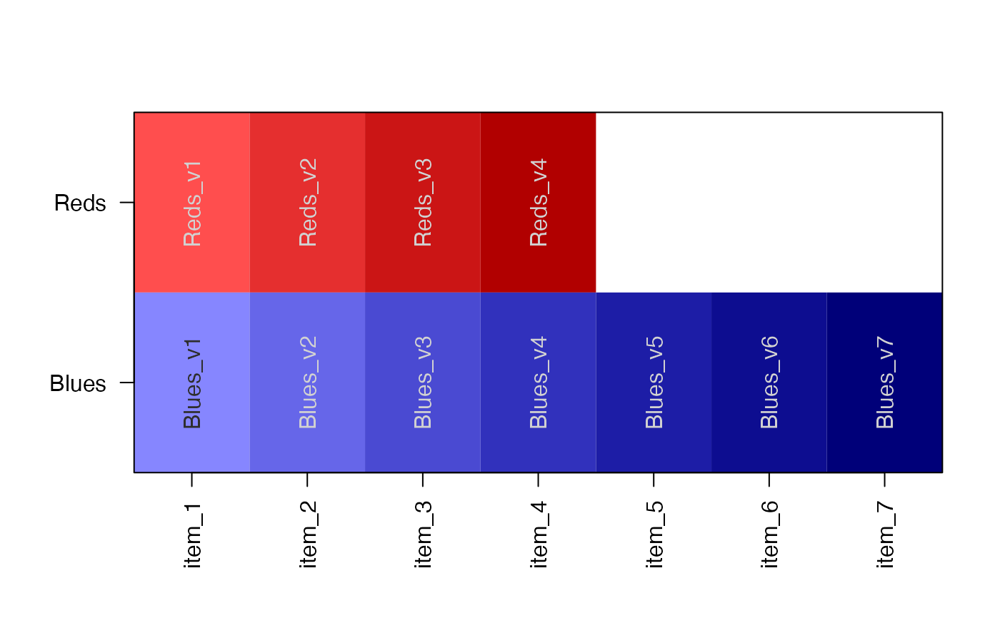
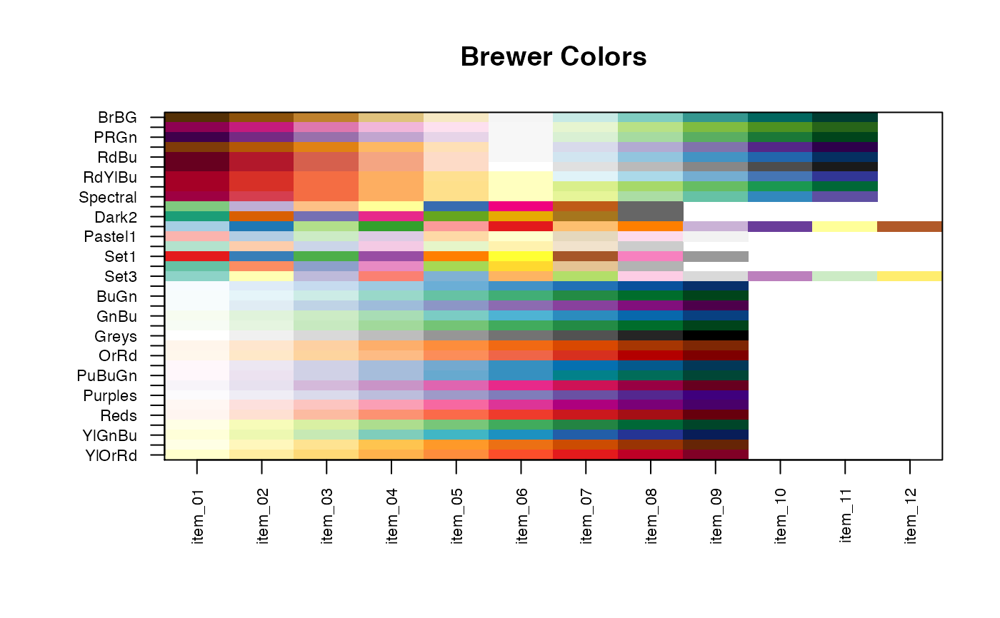
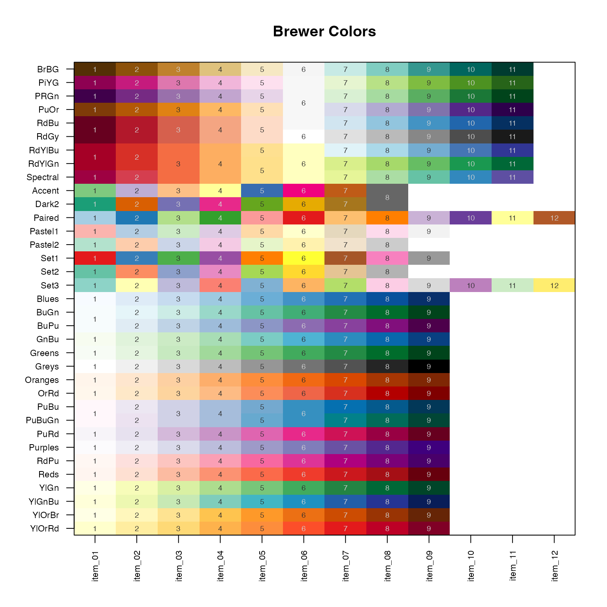
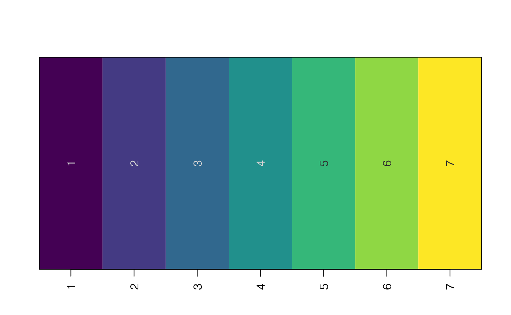
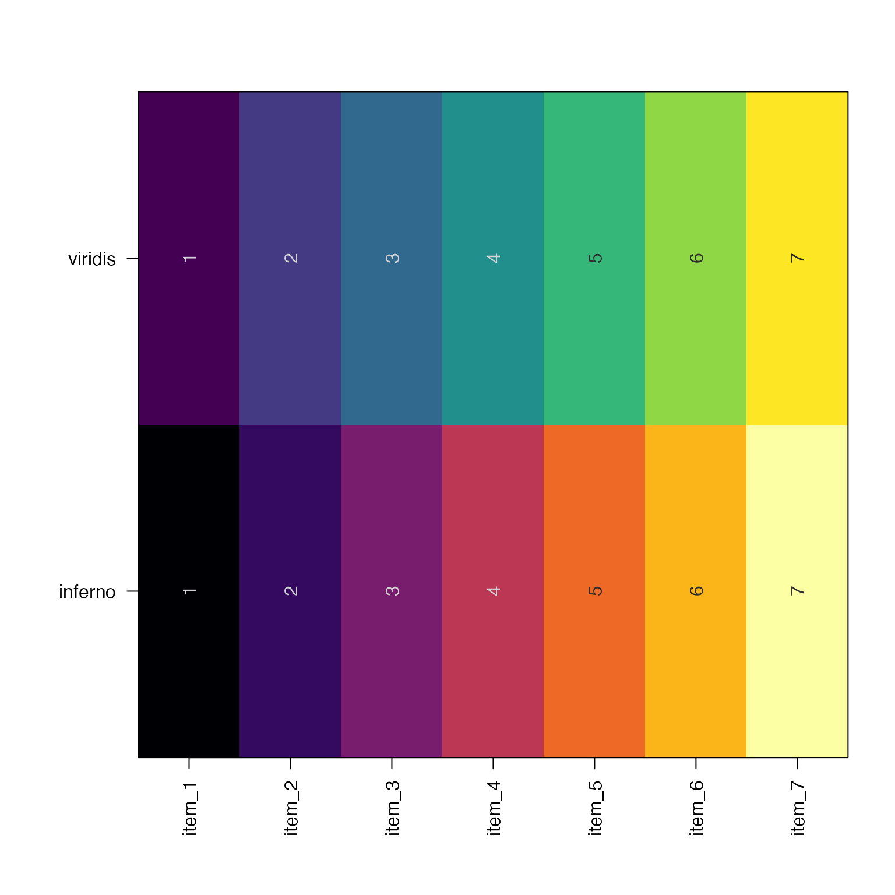
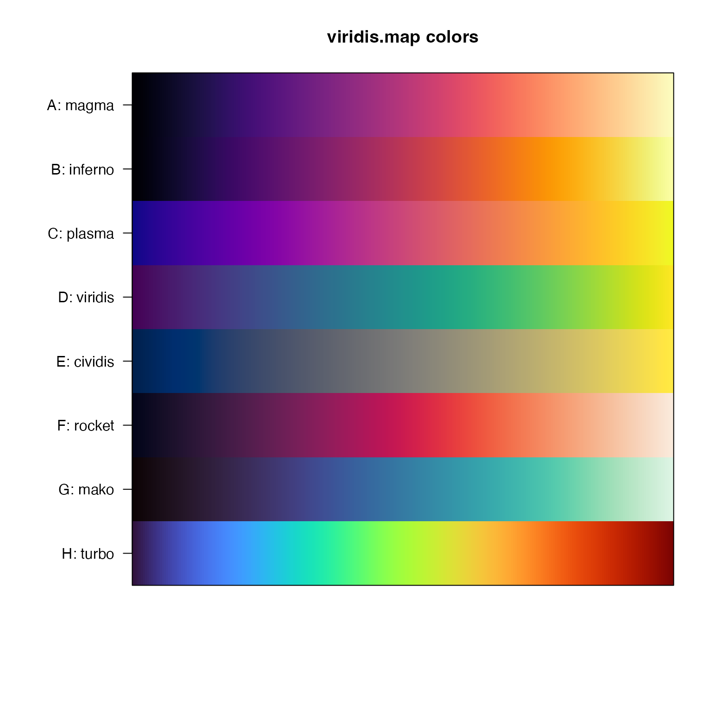
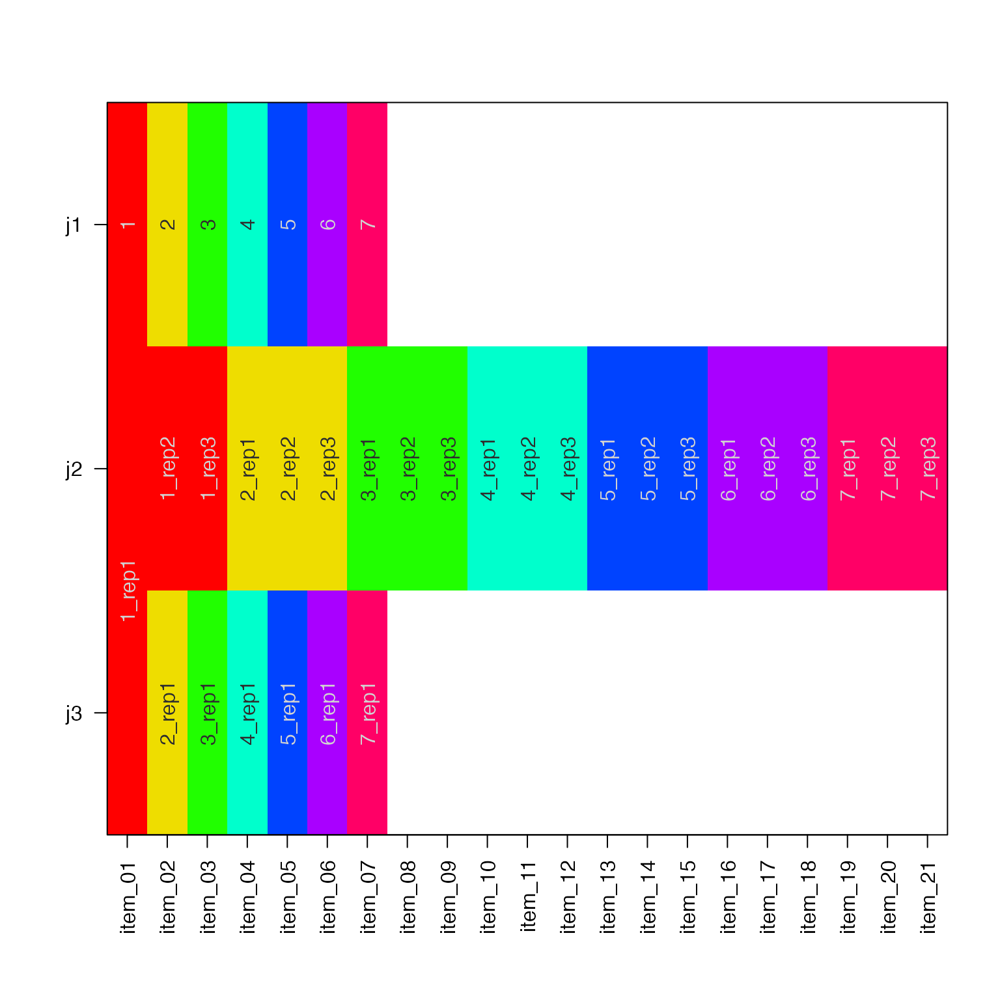

Show colors from a vector or list
Usage
showColors(
x,
labelCells = NULL,
transpose = FALSE,
srtCellnote = NULL,
adjustMargins = TRUE,
makeUnique = FALSE,
doPlot = TRUE,
...
)Arguments
- x
one of these input types:
charactervector of colorsfunctionto produce colors, for examplecirclize::colorRamp2()listwith any combination ofcharacterorfunction
- labelCells
logicalwhether to label colors atop the color itself. If NULL (default) it will only display labels with 40 or fewer items on either axis.- transpose
logicalwhether to transpose the colors to display top-to-bottom, instead of left-to-right.- srtCellnote
numericangle to rotate text whenlabelCells=TRUE. When set to NULL, labels are vertical srtCellnote=90 whentranspose=FALSEand horizontal srtCellnote=0 whentranspose=TRUE.- adjustMargins
logicalindicating whether to calladjustAxisLabelMargins()to adjust the x- and y-axis label margins to accomodate the label size.Note when an axis is hidden by using
xaxt="n"orxaxt="n", the respective margin will not be adjusted.The arguments in
...take precedence overgraphics::par(), when deciding whether to adjust margins. However ifxaxt="s"andgraphics::par("xaxt"="n")the margin will be adjusted but not displayed. In this way the axes can be adjusted without displaying the labels, so the labels can be rendered later if needed.
- makeUnique
logicalindicating whether to display only the first unique color. Whenxis supplied as alistthis operation will display the first unique color for eachlistelement. Also, whenxis alist, just to be fancy,makeUniqueis recycled tolength(x)so certain list elements can display unique values, while others display all values.- doPlot
logicalindicating whether to produce a visual plot. Note this function returns the color matrix invisibly.- ...
additional parameters are passed to
imageByColors().
Value
invisible color matrix used by imageByColors(). When
the input x is empty, or cannot be converted to colors when
x contains a function, the output returns NULL.
Details
This function simply displays colors for review, using
imageByColors() to display colors and labels across the
plot space.
When supplied a list, each row in imageByColors() represents
an entry in the list. Nothing fancy.
See also
Other jam plot functions:
adjustAxisLabelMargins(),
coordPresets(),
decideMfrow(),
drawLabels(),
getPlotAspect(),
groupedAxis(),
imageByColors(),
imageDefault(),
minorLogTicksAxis(),
nullPlot(),
plotPolygonDensity(),
plotRidges(),
plotSmoothScatter(),
shadowText(),
shadowText_options(),
sqrtAxis(),
usrBox()
Other jam color functions:
alpha2col(),
applyCLrange(),
col2alpha(),
col2hcl(),
col2hsl(),
col2hsv(),
color2gradient(),
fixYellow(),
fixYellowHue(),
getColorRamp(),
hcl2col(),
hsl2col(),
hsv2col(),
isColor(),
kable_coloring(),
makeColorDarker(),
rainbow2(),
rgb2col(),
setCLranges(),
setTextContrastColor(),
unalpha(),
warpRamp()
Examples
x <- color2gradient(list(Reds=c("red"), Blues=c("blue")), n=c(4,7));
showColors(x);

showColors(getColorRamp("firebrick3"))

if (requireNamespace("RColorBrewer", quietly=TRUE)) {
RColorBrewer_namelist <- rownames(RColorBrewer::brewer.pal.info);
y <- lapply(nameVector(RColorBrewer_namelist), function(i){
n <- RColorBrewer::brewer.pal.info[i, "maxcolors"]
j <- RColorBrewer::brewer.pal(n, i);
nameVector(j, seq_along(j));
});
showColors(y, cexCellnote=0.6, cex.axis=0.7, main="Brewer Colors");
}

if (requireNamespace("viridisLite", quietly=TRUE)) {
# given one function name it will display discrete colors
showColors(viridisLite::viridis)
# a list of functions will show each function output
showColors(list(viridis=viridisLite::viridis,
inferno=viridisLite::inferno))
# grab the full viridis color map
z <- rgb2col(viridisLite::viridis.map[,c("R","G","B")]);
# split the colors into a list
viridis_names <- c(A="magma",
B="inferno",
C="plasma",
D="viridis",
E="cividis",
F="rocket",
G="mako",
H="turbo")
y <- split(z,
paste0(viridisLite::viridis.map$opt, ": ",
viridis_names[viridisLite::viridis.map$opt]));
showColors(y, labelCells=TRUE, xaxt="n", main="viridis.map colors");
}



# demonstrate makeUnique=TRUE
j1 <- getColorRamp("rainbow", n=7);
names(j1) <- seq_along(j1);
j2 <- rep(j1, each=3);
names(j2) <- makeNames(names(j2), suffix="_rep");
j2
#> 1_rep1 1_rep2 1_rep3 2_rep1 2_rep2 2_rep3
#> "#FF0000FF" "#FF0000FF" "#FF0000FF" "#EEDD00FF" "#EEDD00FF" "#EEDD00FF"
#> 3_rep1 3_rep2 3_rep3 4_rep1 4_rep2 4_rep3
#> "#21FF00FF" "#21FF00FF" "#21FF00FF" "#00FFCCFF" "#00FFCCFF" "#00FFCCFF"
#> 5_rep1 5_rep2 5_rep3 6_rep1 6_rep2 6_rep3
#> "#0043FFFF" "#0043FFFF" "#0043FFFF" "#A900FFFF" "#A900FFFF" "#A900FFFF"
#> 7_rep1 7_rep2 7_rep3
#> "#FF0066FF" "#FF0066FF" "#FF0066FF"
showColors(list(
j1=j1,
j2=j2,
j3=j2),
makeUnique=c(FALSE, FALSE, TRUE))
